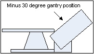

Operating Documentation
Direction 5114045-800, Rev# 10
LightSpeed 4.X Service Information (Advanced)
Operating Documentation |
| Required Persons | Preliminary Reqs | Procedure | Finalization |
|---|---|---|---|
| 1 | Timing Not Applicable | 3 hours |
| Last Revised: | 18 April 2007 |
| Item | Qty | Effectivity | Part# | Manufacturer | |
|---|---|---|---|---|---|
| Standard FE Tool Kit | 1 | - | - | - | |
| Installation Support Kit | 1 | - | - | - | |
| Item | Qty | Effectivity | Part# | Manufacturer |
|---|---|---|---|---|
| Hydraulic oil | - | 2227239 | - | |
| Oil absorption material/Spill kit as defined by HAZMAT processes and procedures | - | - | - | |
| Paper towels | - | - | - |
| Item | Qty | Effectivity | Part# | Manufacturer | |
|---|---|---|---|---|---|
| Hydraulic Tilt Motor Assembly | 1 | - | - | - | |
| CRUSH HAZARD. | |
| THIS SERVICE PROCEDURE REQUIRES THE GANTRY TO BE TILTED ALL THE WAY BACK IN ITS MINUS 30 DEGREE POSITION AND PLACED ON ITS MECHANICAL STOPS. | |
| CRUSH HAZARD. | |
| NEVER INTENTIONALLY INTRODUCE AIR INTO THE HYDRAULIC SYSTEM. |
| CRUSH HAZARD. | |
| NEVER EXTEND THE HYDRAULIC PISTONS BY HAND. DOING SO WILL CAUSE INSUFFICiENT HYDRAULIC PRESSURE IN THE SYSTEM WHEN TILT FUNCTION IS RESTORED. |
| CRUSH HAZARD. | |
| THE NEWLY REPLACED HYDRAULIC CYLINDERS MAY NOT BE UNDER FULL HYDRAULIC PRESSURE. THIS MAY RESULT IN THE GANTRY TILTING SUDDENLY OR ERRATICALLY WHEN THE GANTRY IS MOVED FOR THE FIRST TIME, PAST THE ZERO DEGREE (FULLY UPRIGHT) POSITION. | |
| REMAIN CLEAR OF THE GANTRY UPON INITIAL STARTUP AFTER THE HYDRAULIC TILT ASSEMBLY REPLACEMENT. |
| ELECTROCUTION HAZARD. | |
| 120VAC IS PRESENT AT THE TILT RELAY BOARD. | |
| TURNING OFF THE SERVICE SWITCHES WILL NOT REMOVE THIS POWER. |
| ELECTROCUTION HAZARD | |
| HIGH VOLTAGES PRESENT. | |
| Use proper lockout/tagout procedures before replacing components. See safety menu of Service Document gui for appropriate procedures. |
| Follow ALL required safety and PPE procedures customary for your organization, when working on this product. | |
| Condition | Reference | Eff |
|---|---|---|
Only trained service personnel should service the GE CT Scanner. | - | - |
| CRUSH HAZARD. | |
| THIS SERVICE PROCEDURE REQUIRES THE GANTRY TO BE TILTED ALL THE WAY BACK IN ITS MINUS 30 DEGREE POSITION AND PLACED ON ITS MECHANICAL STOPS. | |
| NOTE: | Spatial orientation defined in this section and for all procedures is from the perspective of an observer standing at the end of the patient table looking towards the Gantry Display board, through the gantry. This orientation defines a "Negative or minus "-") gantry position which places the top of the gantry leaning away from the observer. If necessary, refer to System Safety Overview for exact orientation. |
Remove gantry side and any base covers to gain access to the gantry Tilt Hydraulic Assembly located in the base of the gantry.
Proceed as follows:
(For gantry tilt function operational) Use the one of the operator controls on the gantry cover to drive the gantry to the minus 30-degree (all the way back) position. Refer to Illustration 1 for a side view and exact location of the gantry.
| NOTE: | When you are standing at the back of the table facing the Gantry Display Board, looking through the gantry, the top of the gantry must be tilted away from you, (All the way back). Refer to Illustration 1 for a side view and exact location of the gantry. |
Illustration 1: Service Orientation for Gantry Tilt

(For gantry tilt function NOT operational) Use the service switch on the Tilt Relay Board to drive the gantry to the minus 30-degree (all the way back) position. Refer to Illustration 1 for a side view and exact location of the gantry
On the Tilt Relay Board located on the Tilt Motor Control Board located in the gantry base near the Tilt motor:
Locate and place the Service Switch in the “Service” Position.
Use the Manual Tilt drive switch on the Tilt Relay Board to drive the gantry to the mechanical stops.
Once the gantry is in the correct position, disable the gantry tilt function, high voltage, and 120VAC service switches.
Shutdown system software and turn off the console power switch under the console table top.
Remove all system power at the main disconnect (A1) panel. Perform proper Lockout/Tagout power control procedures.
While viewing the gantry from the rear, the gantry Tilt Hydraulic Assembly is located inside the right gantry base assembly of the gantry. Label the wires located on the gantry Tilt Relay Board for later assembly.
While viewing the gantry from the rear, disconnect the three-phase power plug at the side of the gantry power pan, located inside the left side of the gantry base assembly.
Remove the rear screws securing the gantry Tilt Hydraulic Assembly to the gantry base frame.
Loosen the front screws securing the gantry Tilt Hydraulic Assembly. Their complete removal is not necessary.
Disconnect and remove the cables connections and wires at the terminal on the Tilt Relay Board.
Identify all tie wraps and fasteners securing the hydraulic lines to the gantry frame and Take note of the routing of these hydraulic lines.
Remove any fasteners and tie wraps securing the hydraulic lines to the gantry base frame and hydraulic cylinder. Be careful not to puncture or kink any of the hydraulic lines
While viewing the gantry from the rear, the STC Assembly will be on the left, to proceed, it may be easier to remove the STC Assembly by removing the 3 screws securing it to the Gantry Frame. No cable removal should be necessary from the STC.
While viewing the gantry from the rear, loosen 4 hex socket caps at the top of the left hydraulic cylinder mount bracket, and 3 screws of the mount bracket at the bottom of the left hydraulic cylinder. Keep your hands clear of potential gantry pinch points at all times.
Remove the left hydraulic cylinder and its lines from the gantry base.
Carefully install the new left hydraulic cylinder in place. Make sure the lines are properly routed along the gantry frame. Do not tie wrap them in place at this time.
While viewing the gantry from the rear, loosen 4 hex socket caps at the top of the right hydraulic cylinder mount bracket, and 3 screws of the mount bracket at the bottom of the right hydraulic cylinder. Keep your hands clear of potential gantry pinch points at all times.
Remove the right hydraulic cylinder and its lines from the gantry base.
Completely remove the gantry Tilt Hydraulic Pump Assembly from the gantry base.
| CRUSH HAZARD. | |
| NEVER EXTEND THE HYDRAULIC PISTONS BY HAND. DOING SO WILL CAUSE INSUFFICiENT HYDRAULIC PRESSURE IN THE SYSTEM WHEN TILT FUNCTION IS RESTORED. |
To proceed, inspect the replacement gantry tilt hydraulic unit and hydraulic cylinders for any damage in shipment. There should be no leaking oil and no residual oil in the shipping crate. The hydraulic pistons should be full compressed into their cylinders. (Do not extend the pistons by hand.)
If you suspect that the replacement unit is not in proper condition for installation or appears damaged in any way stop the replacement process and escalate by calling Field Leadership for further direction.
If you do not see any damage remove the replacement unit from its shipping crate being careful not to kink the hydraulic lines.
Move the replacement unit to the back of the gantry.
Install the gantry Tilt Motor Assembly into the base. Secure the gantry Tilt Motor Assembly with its four screws.
Install the right hydraulic cylinder.
Loosely secure all hydraulic lines with tie wraps. Do not tighten the tie-wraps at this time. Make sure to leave approximately 1 inch (2.5cm) of slack on both left and right cylinder lines to prevent hose damage during forward tilt.
Attach all wires and cables removed from the gantry Tilt Relay Board.
While viewing the gantry from the rear, torque the M12 screws for the upper left cylinder mount bracket to 66.4 N-m (49 ft-lbs).
While viewing the gantry from the rear, torque the M12 screws for the upper right cylinder bracket to 66.4 N-m (49 ft-lbs).
If the STC Assembly was removed, re-attach the STC Assembly to the gantry frame. If any tie wraps were removed from the cables, re-install new ones.
Remove Lockout/Tagout following all Lockout/Tagout procedures to restore main power.
| CRUSH HAZARD. | |
| THE NEWLY REPLACED HYDRAULIC CYLINDERS MAY NOT BE UNDER FULL HYDRAULIC PRESSURE. THIS MAY RESULT IN THE GANTRY TILTING SUDDENLY OR ERRATICALLY IF THE GANTRY IS MOVED PAST THE ZERO DEGREE (FULLY UPRIGHT) POSITION. | |
| REMAIN CLEAR OF THE GANTRY UPON INITIAL STARTUP AFTER THE HYDRAULIC TILT ASSEMBLY REPLACEMENT. NEVER INTENTIONALLY INTRODUCE AIR INTO THE HYDRAULIC SYSTEM. |
| ELECTROCUTION HAZARD. | |
| 120 VAC IS PRESENT AT THE TILT RELAY BOARD. | |
| TURNING OFF THE SERVICE SWITCHES WILL NOT REMOVE THIS POWER. |
Enable the gantry tilt function, High voltage, and 120VAC service switches.
While viewing the gantry from the rear, locate the Tilt Relay board on the replacement tilt hydraulic assembly.
Set the Service Switch to the “Service” position on the Tilt Relay board.
Use the manual tilt switch to drive the gantry off of its stops approximately 1 inch (2.5cm).
On the Tilt Relay board, set the Service Switch to the “Normal” position.
Turn on the Console using the power switch under the console table top. The system software should automatically boot the system up to full operation.
| NOTE: | For 1 FE only perform Step 17. For 2 or more FEs perform Step 18. |
(For 1 FE only) If another Field Engineer is not present to aid in the initial movement of the gantry, proceed as follows. When moving the gantry tilt for the first time periodically stop titling the gantry and check the gantry movement for obstructions and slack in the hydraulic lines.
Stand at the side of the gantry (clear of tilt motion) and use one of the operators control panels on the front of the gantry to tilt the gantry forward using the tilt feature to tilt the gantry to the -20 degree position for first time and stop.
Check the hydraulic lines to ensure that there is enough slack to accommodate further tilting.
Stand at the side of the gantry (clear of tilt motion) and use one of the operators control panels on the front of the gantry to tilt the gantry forward using the tilt feature to tilt the gantry to the -10 degree position for first time and stop.
Check the hydraulic lines to ensure that there is enough slack to accommodate further tilting.
| NOTE: | It may be possible for the gantry to move erratically when it passes through the zero degree (fully upright) position the first time and its weight becomes supported by the new hydraulic system. |
While staying clear of the gantry (stand at its side), use one of the operators control panels on the front of the gantry to continue tilting the gantry forward to the zero degree (Fully upright) position and stop.
Check the hydraulic lines to ensure that there is enough slack to accommodate further tilting.
While staying clear of the gantry (stand at its side), use one of the operators control panels on the front of the gantry to continue tilting the gantry forward to the + 10 degree position and stop. Be prepared for possible erratic tilt motion during this step.
At the + 10 degree position check the hydraulic lines for proper slack and gantry in general for any other obstructions.
While staying clear of the gantry (stand at its side), use one of the operators control panels on the front of the gantry to continue tilting the gantry forward to the +30 degree position where it should come to a complete stop.
At this time tighten up the tie wraps by hand holding the hydraulic lines.
Continue with Step 19.
(For 2 or more FEs) If another Field Engineer is available on site, have one person observe the hydraulic lines and gantry motion by standing behind and clear of the gantry during this first tilt.
Use one of the operators control panels on the front of the gantry to tilt the gantry forward using the tilt feature to tilt the gantry to the -10 degree position for first time and stop.
Stop and check the hydraulic lines to ensure that there is enough slack to accommodate further tilting.
| NOTE: | It may be possible for the gantry to move erratically when it passes through the zero degree (fully upright) position the first time and its weight becomes supported by the new hydraulic system. |
While staying clear of the gantry (stand at its side), use one of the operators control panels on the front of the gantry to continue tilting the gantry forward to the zero degree (Fully upright) position and stop. During the tilt the observer should stop the tilt if he/she observes any problem with the hydraulic lines or the gantry encounters any obstructions.
While staying clear of the gantry (stand at its side), use one of the Operators control panels on the front of the gantry to continue tilting the gantry forward to the + 10 degree position and stop.
Check the hydraulic lines for proper slack and gantry in general for any other obstructions.
While staying clear of the gantry (stand at its side), use one of the Operators control panels on the front of the gantry to continue tilting the gantry forward to the +30 degree position where it should come to a complete stop.
At this time tighten the tie wraps holding the hydraulic lines.
While viewing the gantry from the rear, torque the M6 screws for the lower left cylinder mount bracket to 7.9 N-m (5.8 ft-lbs).
While viewing the gantry from the rear, torque the M6 screws for the lower right cylinder bracket to 7.9 N-m (5.8 ft-lbs).
While viewing the gantry from the rear, locate the Tilt Relay board on the replacement tilt hydraulic assembly.
On the Tilt Relay board, set the Service Switch to the “Service” position to test the manual tilt function under the full weight of the gantry.
Use the manual tilt switch to drive the gantry to the zero degree (fully upright) position and stop.
Set the Service Switch to the “Normal” position.
While staying clear of the gantry (stand at its side), use one of the Operators control panels on the front of the gantry to resume tilting the gantry, exercising the new tilt hydraulic assembly completely through its full range of motion.
Exercise the tilt function at least 6 full cycles (-30 to +30) to purge any air from the hydraulic system.
Place the gantry at its zero degree (fully upright) position and stop.
When the tilt pump is warm to the touch make final speed adjustments. Refer to Hydraulic Tilt Motor Speed Adjustment.
Reassemble gantry by replacing any covers removed.
Refer to “Clean-up and Personal Hygiene,” located in Equipment Service - Chemicals and Materials, for proper disposal of contaminated materials.